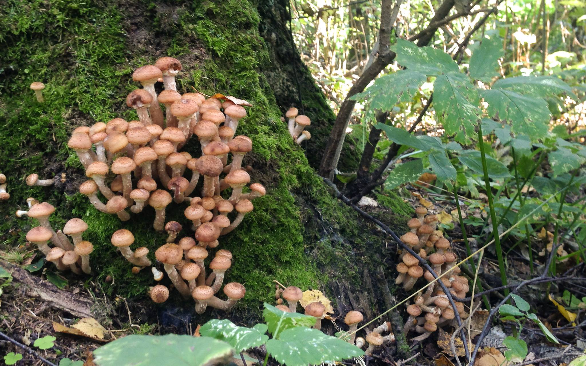

Сегодня, давно разменяв четвёртый десяток, собирая к тому же грибы, я понял, почему мне чуждо, например, спортивное боление и любой соревновательный момент вообще.

Я получаю удовольствие от действий, а не от результата. Причём от действий, которые произвожу сам.
В этой же плоскости, кстати, лежит любовь к путешествиям, а не перемещениям себя куда-то. Нравится сам процесс.
Смотреть футбол для меня, в моей парадигме, — всё равно, что смотреть, как кто-то собирает грибы.